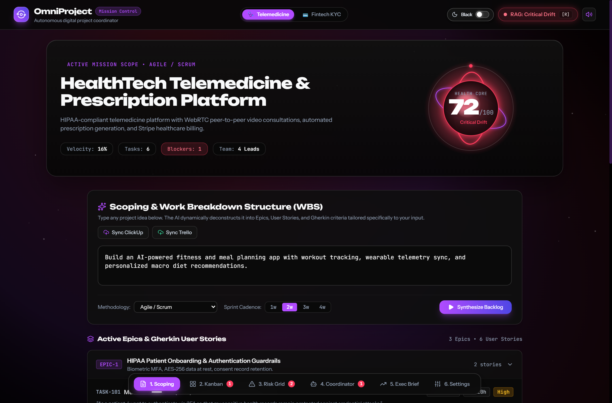
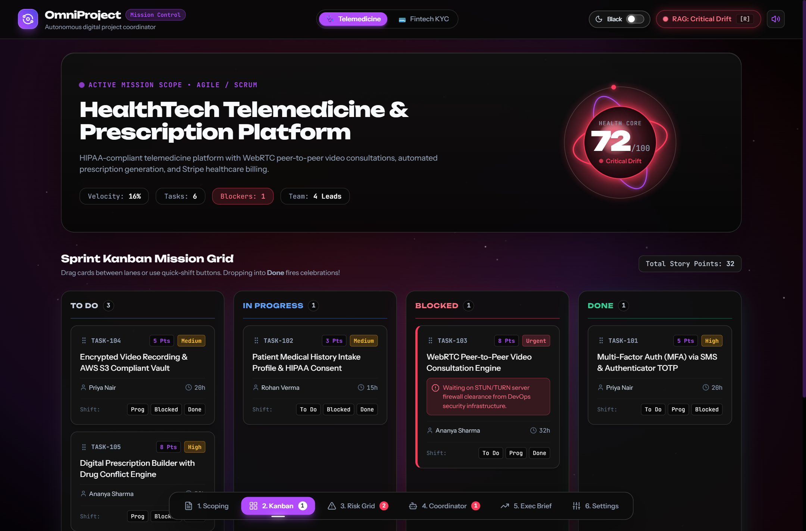
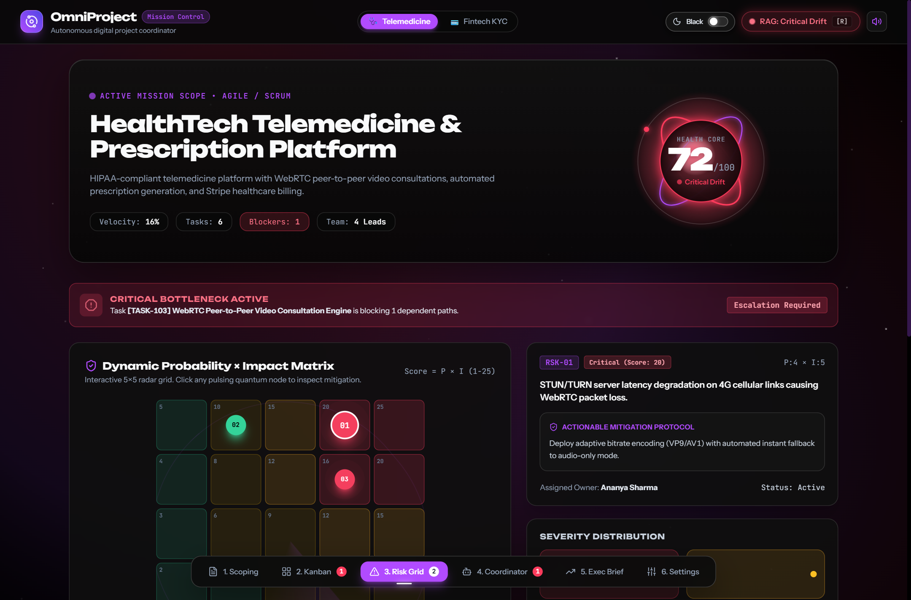
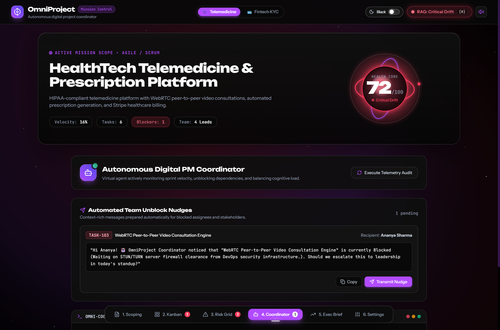
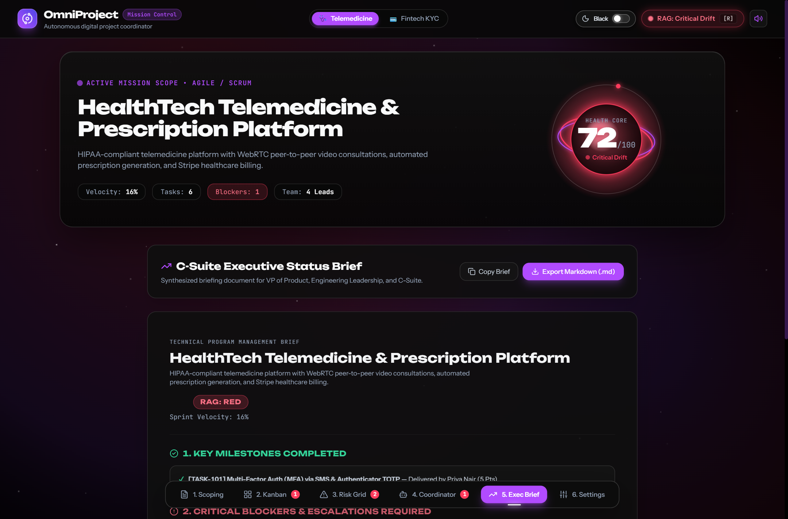
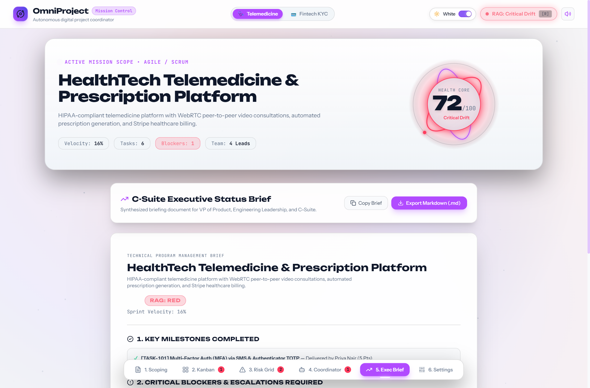

Project Title: OmniProject AI — Autonomous Digital Project Coordinator & Multi-Platform Mission Control Suite.
OmniProject AI is an enterprise-grade, full-stack digital project coordination platform architected to operationalize the core artificial intelligence principles, workflows, and prompts taught in the "Managing Projects with AI" certification by AI CERTs™ on Coursera. The platform bridges autonomous LLM reasoning with industry-standard project management software (ClickUp, Trello, Wrike, and Hive).
Course: "Managing Projects with AI" by AI CERTs™ (Coursera)
Lecture: "Leveraging Generative AI & Virtual Agents in Agile Project Management (ClickUp, Trello & Wrike Integrations)"
Recommended timestamp: Lecture segment introducing AI-augmented WBS generation and Virtual Project Coordinators.
| Category | Tool / Technology | Role & Implementation Details |
|---|---|---|
| PM Platforms | ClickUp | v2 REST API synchronization for Spaces, Lists, Tasks, Priority tags, and automated Critical Path Bottleneck detection. |
| PM Platforms | Trello | REST API Kanban synchronization (Lists, Cards, Fibonacci story point badges, Acceptance checklists). |
| PM Platforms | Wrike & Hive | Workload Balancing Engine ($\text{Load \%} = \frac{\text{Allocated}}{\text{Capacity}} \times 100$) and predictive cycle-time velocity modeling. |
| Frontend Architecture | React 18 + Vite + TypeScript | High-performance reactive interface, TailwindCSS design system with dual OLED Black (#000000) and Slate White (#F8FAFC) toggle. |
| Visual Computing | Canvas 2D / WebGL Engine | Dynamic orbital particle simulator rendering real-time RAG Project Health Core with 60 FPS animation. |
| AI & LLM Services | Google Gemini 1.5 & OpenAI GPT-4o | Context-rich prompt pipelines generating structured Gherkin user stories, P×I risk logs, and C-Suite executive briefs. |
| Req ID | Module | Functional Requirement Specification |
|---|---|---|
| FR-01 | WBS Scoping Engine | Synthesizes 2–4 Epics with Fibonacci story points (1, 2, 3, 5, 8, 13) and Gherkin acceptance criteria (Given/When/Then) from raw text prompts. |
| FR-02 | Multi-Platform Sync | 1-click push to live ClickUp v2 workspace or Trello board, backed by realistic zero-config offline mock simulation. |
| FR-03 | Sprint Kanban Grid | Interactive drag-and-drop / single-click state transition across To Do, In Progress, Blocked, and Done with live story point recalculation. |
| FR-04 | Dynamic Risk Matrix | 5×5 Probability (1-5) × Impact (1-5) grid with automated scoring (1-25) and severity categorization (Low, Moderate, High, Critical). |
| FR-05 | Virtual PM Coordinator | Autonomous agent auditing telemetry, computing capacity loads, generating contextual unblock nudges, and logging audit events. |
| FR-06 | Executive Briefing | Instant RAG status summary, milestones completed, active escalations, and one-click Markdown file export. |
| FR-07 | Theme Switcher | Instant toggle between sleek OLED Black (#000000) and clean Slate White (#F8FAFC) modes with persistent local storage. |
In conventional engineering environments, project managers spend up to 40% of their weekly capacity performing manual coordination overhead: transcribing requirements into user stories, manually updating status boards across multiple tools, chasing assignees for unblocking details, and formatting leadership status reports.
OmniProject AI completely automates this operational layer. By combining generative AI prompt chains with active API telemetry, the system creates an autonomous closed loop: requirements are dynamically transformed into structured backlogs; task states are synchronized with ClickUp and Trello; critical-path dependencies trigger proactive unblock messages; and real-time project health is continuously tracked via a mathematically grounded 0–100 Health Score.

Key Capabilities: Users input raw project briefs (e.g. Telemedicine or Fintech KYC). The LLM synthesizes structured Epics, assignees, hours, Fibonacci points, and formal Given-When-Then Gherkin criteria with direct sync capabilities to ClickUp and Trello.

Key Capabilities: Real-time task movement across lanes. Blocked tasks on critical paths are prominently highlighted with blocker descriptions and urgency badges, triggering autonomous coordinator alerts.

Key Capabilities: Computes risk scores via $P \times I$, plotting pulsing quantum nodes onto a 5×5 heat grid. Selecting any node displays the mitigation strategy, assigned owner, and escalation status.

Key Capabilities: Proactively audits sprint telemetry, detects blocked assignees, pre-drafts contextual Slack/Teams unblocking nudges, and evaluates workload capacity to prevent contributor burnout.


The OmniProject AI Coordinator demonstrates how modern AI workflows transcend passive chatbots to become proactive, autonomous agents in enterprise project management. By successfully uniting the tools from the Managing Projects with AI certification (ClickUp, Trello, Wrike, and Hive) under an intuitive, dual-theme interface, the application delivers a complete operational blueprint for next-generation agile engineering teams.